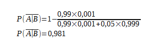
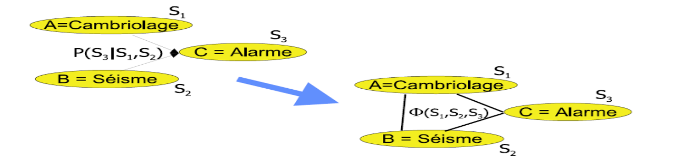
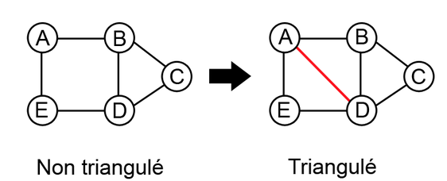
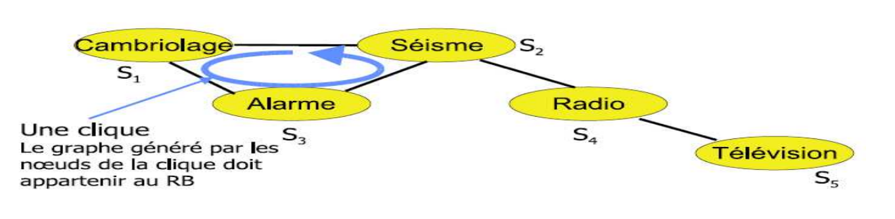

Résumé
Crée à la fin des années 1980, les réseaux bayésiens sont des systèmes d’analyse qui se basent les travaux du mathématicien Thomas Bayes ; plus particulièrement à son théorème de « probabilité des causes. Présentés sous forme d’un modèle graphique probabiliste acyclique, les réseaux bayésiens représentent des événements aléatoires et permettent de décrire l’incertitude des faits qu’ils engendrent. Leur domaine d’utilisation est varié. Dans le domaine médical, on utilise ces réseaux pour faire des diagnostics, en se basant sur des cas précédent. Dans l’industrie, ils sont utilisés pour connaître les causes possibles d’un dysfonctionnement d’un système électronique. Durant un procès, les juges peuvent utiliser ce type d’analyse pour les aider à la décision par rapport aux preuves, témoignages…
Préambules
Un réseau bayésien est en informatique et en statistique un modèle graphique probabiliste représentant des variables aléatoires sous la forme d'un graphe orienté acyclique. Intuitivement, ils sont à la fois :
- Des modèles de représentation des connaissances;
- Des « machines à calculer » les probabilités conditionnelles;
- Une base pour des Systèmes d'aide à la décision.
Cette représentation graphique permet d'exprimer le modèle en question de façon plus intuitive et synthétique.
L'intérêt particulier des réseaux bayésiens est de tenir compte simultanément de connaissances a priori d'experts (dans le graphe) et de l'expérience contenue dans les données.
Les réseaux bayésiens permettent ainsi de décrire l'incertitude de faits, de construire des probabilités jointes, ainsi que de retrouver toutes les probabilités conditionnelles à partir de ces dernières.
Ces réseaux sont mathématiquement régis par le Théorème de Bayes que nous détaillerons plus bas.
Origines
Les réseaux Bayésiens sont nommés en référence au travaux du mathématicien Thomas Bayes.
Le théorème de Bayes appelé aussi « probabilité des causes » découle des probabilités conditionnelles et des probabilités totales,

Exemple
On applique le théorème de Bayes au dépistage d'une maladie
| test | positif | négatif |
|---|---|---|
| Patient malade | 99% | 1% |
| Patient sain | 5% | 95% |
La probabilité d'être atteint par la maladie est de 0,001
Désignons par A l’évènement « Le patient a contracté la maladie » et par B l’évènement « Le test est positif »
La probabilité qu'un patient sain soit testé positivement est de
Ce résultat impressionnant est dû à une probabilité très faible du nombre de malade
(source Wikipédia)
En intelligence Artificielle les systèmes doivent être évolutif et apprendre de leurs expérience afin de comprendre les liens entre les causes et les effets dans le but de faire évoluer son comportement en prenant la décision la plus approprié en fonction de son environnement.
Principes
Graphe orienté acyclique: construction des graphes
Les réseaux Bayésiens sont des modèles graphique probabiliste associé à une distribution jointe de probabilité
Les réseaux sont acyclique car les effets ne peuvent pas influencé les causes, ils sont également orientés afin de représenter les dépendances entre les variables
Pour construire un graphe il faut:- définir les variables et leurs modalité
- établir les liens entre les variables
- dresser les tables de probabilités à partir des données statistiques
circulation de l'information(causalité)
Dans un réseau bayésien la circulation de l'information est représentée par le sens des arcs. (l'information est qualitative)
Elles représentent l'influence entre les différentes informations.
- Connexion convergente: deux informations mène à la même conclusion
- Connexion en série: l'association de cause produit un effet
- Connexion divergente: une cause engendre deux effets distincts

Un noeud dépend uniquement de ses parents
Les inférences
Définition
L’inférence est un mouvement de pensé qui permet d’aller des origines aux conséquences, des principes à la conclusion. L’inférence implique forcement le recours à l’interprétation. Prenons l’exemple suivant : « Une camionnette de police se trouve devant la maison ». En lisant cette phrase il est fort probable que vous fassiez une inférence c’est-à-dire que vous pensiez à que quelqu’un dans la maison soit arrêté ou qu’il y a eu un cambriolage. L’inférence est le fait de rajouter une information à celle présente. Il existe plusieurs types d’inférences dont les principaux sont déductives, inductives, abductives. L’inférence bayésienne est un type d’inférence. L’inférence bayésienne est une méthode d’inférence permettant de déduire la probabilité d’un évènement à partir de celles d’autres évènements déjà connus. L’inférence est basée sur l’énoncé du théorème de Bayes. Nous avons vu précédemment ce théorème que nous allons rappeler ici afin qu’il n’y ait pas de confusion quand aux explications. Nous parlons de probabilité à priori les probabilités dont nous avons fait l’hypothèse, elles ne sont pas vérifiées par l’expérience. Les calculs à posteriori se font grâce à un échantillon de tests qui fourni les données pour construire une courbe expérimentale. A partir de cette courbe nous pourront tracer et approcher la courbe théorique de probabilité. La formule donne :
P(A) : désigne la probabilité à priori de A
P(A|B) : désigne la probabilité à posteriori de A sachant B (ou encore de A sous condition B)
P(A∩B) : désigne la probabilité que A et B aient tous les deux lieu.
Le théorème de Bayes permet d'inverser le lien entre probabilités. C'est-à-dire que si l'on connaît les conséquences d'une cause, l'observation des effets permet de remonter aux causes, c'est l'effet d'induction « bottom-up ». Sachant aussi qu’une lecture littérale du théorème de Bayes permet une induction « top-down », c'est à dire à partir des causes en déduire les conséquences.
Algorithmes
Les réseaux Bayésiens ont été crées afin de répondre à deux besoins. La prédiction et l’abduction. L’abduction est une forme de raisonnement où des hypothèses sont faites pour expliquer des observations. Les réseaux Bayésiens permettent de trouver une interprétation des observations avec des données connues. L’inférence probabiliste se résume à calculer la probabilité P(X|Y) avec X un ensemble d’observations et Y un ensemble de variables instanciées.
Deux méthodes existent pour écrire les algorithmes d’inférences : Les méthodes complètes et approximatives.
- Les méthodes complètes
- Les méthodes approximative
- Les méthodes complètes
Les premiers algorithmes d’inférences pour les réseaux bayésiens sont basés sur une architecture à passage de messages et étaient limité aux arbres (Pearl 88). Le principe est que chaque nœud est associé à un processus et envoie un message de façon asynchrone à ses voisins jusqu'à qu’un équilibre soit atteint. Désormais cette méthode est devenu un modèle de communication entre ordinateur et ou entre les processus. Cette méthode est utilisée par le protocole SOAP pour les webservices.
Cependant la méthode la plus commune dans les méthodes complètes est l’algorithme de l’arbre de jonction. Cette méthode est basée sur 2 grands principes de construction : La moralisation et la triangulation et doit avoir un nombre de clique maximal.
Moralisation :

Triangulation : tout cycle de longueur au moins 4 doit contenir une corde (arête reliant deux sommets non consécutifs sur le cycle).

Clique maximale = l’ajout d’un autre nœud à cette clique ne donne pas une clique.

- Les méthodes approximative
La méthode approximative la plus connu et la plus utilisée est la méthode variationnelle. Cette méthode consiste à remplacer une distribution multidimensionnelle complexe par son meilleur représentant dans une famille plus simple de distributions, cette méthode est inexacte et ajoute de l’approximation mais à l’avantage d’être efficace et compréhensible par l’homme.
Apprentissage des réseaux bayésiens
Chaque événement est au départ recensé dans une table de donnée. Ce sont des données expérimentales. A partir de là, on établit des liens entre les événements que l’on représente à l’aide d’un graphe dit acyclique orienté. C'est-à-dire qu’il ne peut exister de boucle et que chaque nœud (ou événement) fils dépend d’un nœud père. Seulement un lien direct peut exister entre un événement B et un événement A.
La distribution jointe :

La probabilité d’un réseau définit par des événements correspond au produit des probabilités conjointes de chaque événement. On exprime par la probabilité d’un événement sachant ses parents . C'est-à-dire la probabilité d’un nœud sachant celle des parents.
La Loi de Markov : On remonte qu’à un rang au dessus i.e. au parent. Un fils ne dépend que de ses parents et non des générations précédentes. Ainsi, grâce au graphe acyclique oriente crée, on peut ensuite faire le tableau de probabilité. On calcul chaque probabilité conjointes des fils sachant celle des parents. Exemple : Séisme / Cambriolage

L’alarme peut se déclencher soit à cause d’un cambriolage, soit à cause d’un séisme. Les probabilités conditionnelles alarme sachant cambriolage ou/et séisme sont déduites en fonction des probabilités que tel ou tel événement survienne.
Calcul des probabilités jointes :
1) Apprentissage des paramètres :
A partir des données disponibles (tableaux de donné), on cherche à calculer les lois de probabilité de chaque événements. Ces derniers peuvent être complètes ou non. Une première approche consiste à calculer les probabilités selon la fréquence d’apparition d’un événement dans la base de données. Cette méthode est appelée maximum de vraisemblance, tel que :

Dans la formule précédente Ni,j,k est le nombre d’événements dans la base de données pour lesquels la variable est dans l’état k et ses parents sont dans la configuration cj. Dans certains cas, les données sont incomplètes et sont observées que partiellement. Cependant, le calcul de probabilité doit se faire. La méthode la plus couramment utilisée est fondée sur l’algorithme itératif EM (Expectation Maximisation) Soit :
Xv={Xv(I)}I=1...N: N l’ensemble des données observées (visibles).
θ(t)={θ(t)i,j,k}: Les paramètres du réseau bayésien à l’itération.
Espérance : Cela permet d’estimer les valeurs manquantes à partir des paramètres actuels θ(t).
Pour cela, on calcul P(Xmanquant|Xmesurées) dans le réseau actuel.
On fait des inférences dans le réseau bayésien muni des paramètres.
Maximisation : On ré-estime les paramètres θ(t+1) à partir des données complétées en utilisant plusieurs méthodes.
2) Apprentissage de la structure :
L’apprentissage de la structure consiste à trouver des méthodes pour construire efficacement les graphes symbolisant les événements. Tout d’abord, à partir de n nœuds, le nombre de structures (NS) possibles se définit par :

Au sein d’une structure, le nombre de paramètres (indépendants) nécessaires pour décrire l’ensemble des probabilités conditionnelles est appelé Dimension du réseau.
A l’aide de plusieurs méthode, on peut déterminer si on a établit un bon réseau bayésien.
Première méthode : On recherche directement les indépendances conditionnelles. On peut aussi associer un « score » à chaque structure définit par :

avec B un structure, D l’ensemble des données , Xi les événements et Pai les parents des Xi
On cherche alors un réseau maximisant ce score.
Conclusion
Utilisation des réseaux bayésiens
Il existe de nombreux domaine ou les réseaux bayésiens sont utilisés. Que ce soit dans le domaine de la médecine, de l’industrie, des finances et du droit. Nous allons prendre des exemples dans l’industrie et le droit.
Dans l’industrie de l’électronique embarqué, l’utilisation de d’une Analyse de Mode de Défaillance et de leur Effet Critique est très prisé.
Cette analyse est basée sur le taux d’occurrence des modes des défaillances intrinsèques des composants électroniques. Ce taux d’occurrence sont données dans un recueil de données inventoriant l’ensemble des mécanismes de distribution des modes de pannes pour chaque type de composant électroniques. Ils sont référencés dans la norme Failure Mode/Mechanism Distributions databook .
Par exemple, le tableau ci-dessous donne les taux d’occurrence des modes de pannes pour un condensateur céramique (FMD-91)
| Device Type | Failure Mode | Failure Mode Probability (%) |
|---|---|---|
| Capacitor, Ceramic | Court-circuit | 0,49 |
| Change de valeur | 0,29 | |
| Circuit ouvert | 0,22 |
Avec ces estimations de différents modes de défaillances et en se basant sur les schémas du système, il est possible de créer un réseau bayésien sur ce que pourrait produire une panne du composant sur l’ensemble des autres composants aux alentours.
La réflexion est étendue aux dégâts qu’il pourrait causer au bloc fonctionnel auquel il est rattaché et au système tout entier. Ces dégâts peuvent aller d’un dysfonctionnement annexe non vital à la perte définitive du système.
Cette réflexion, qui part du défaut du composant jusqu’à la panne qu’elle provoque au système, s’oppose à une autre qui prend le chemin inverse : l’arbre de défaillance. On part du moment redouté et on déroule la réflexion sur ce qui a provoqué cette défaillance. Par exemple :

Ici, la Défaillance Redouté est provoquée par l’association de la Cause 1 avec la Cause 2. La Cause 1 a été provoquée soit par la Sous Cause 1 ou par la Sous Cause 2. Enfin, la Sous Cause 2 a été engendrée soit par le Composant B ou par le Composant C
Dans le domaine du droit, les réseaux bayésien sont utilisés, lors d’un procès, afin d’aider à la décision du juge au vue des preuves, des témoignages, des fait et des expertises.
Durant un procès, il est possible d’émettre deux hypothèses sur une affaire :
Hp : Hypothèse du procureur, de l’accusation Hd : Hypothèse de la défense
On se base sur la valeur de l’indice matériel, à l’aide du « rapport de vraisemblance », appelé aussi Likelihood ratio (LR) :

I : Informations générales sur le cas, circonstances de l’affaire E : Evidence, concordance entre une trace et le matériel de comparaison P(E/Hp,I) : probabilité d’observer la preuve sachant l’hypothèse du procureur et les informations du cas P(E/Hd,I) : probabilité d’observer la preuve sachant l’hypothèse de la défense et les informations du cas
Le résultat de ce calcul permettra de soutenir une des deux hypothèses mises en opposition :
- LR = 1 la preuve n’est pas pertinente, elle confirme les deux hypothèses
- LR < 1 la preuve soutien l’hypothèse de la défense Hd par rapport à Hp
- LR > 1 la preuve soutien l’hypothèse du procureur Hp par rapport à Hd
Critique
Avantages
- La représentation des relations causales entre les variables d'un système est transparente et explicite;
- Les réseaux bayésiens utilisent une grande variété de données en entrée;
- Il est possible de représenter des événements incertains;
- Il existe des outils visuels d'aide à la décision;
- L'apprentissage est possible avec des données incomplètes et permet d'intégrer des connaissances hétérogènes;
- Le modèle est évolutif et accepte l'ajout de nouvelles données;
- La base de données relativement riche pour l’apprentissage;)
- La représentation des connaissances par liens entre causes et effets est souvent plus naturelle que la représentation par règles de production
- La représentation des connaissances est assez lisible (par opposition aux réseaux de neurones par exemple, ou aux arbres de décision
- Les types d'inférences réalisables à partir de la représentation sont très variés (diagnostic, effets, analyse de sensibilité, ...)
Limites
- Il est peut s'avérer difficile d'être d'accord avec les experts concernant la structure du réseau bayésien;
- La table de probabilité conditionnelle est compliquée à définir avec l'avis de l'expert;
- Il existe un problème de représentation des variables continues, en effet car les probabilités sont discrètes et non continues;
- Le modèle ne tient pas compte d'un temps ou d'un espace dynamique;
- Il n'existe pas de boucles de rétroaction.
- L'utilisation des probabilités et leur donnée par l'expert sont problématiques
- La complexité des algorithmes peut parfois poser problème
- Les tables de probabilité d’un noeud croient exponentiellement avec le nombre de ses parents et leur nombre de modalité.
Bibliographie
A classer par ordre alphabétique de référence